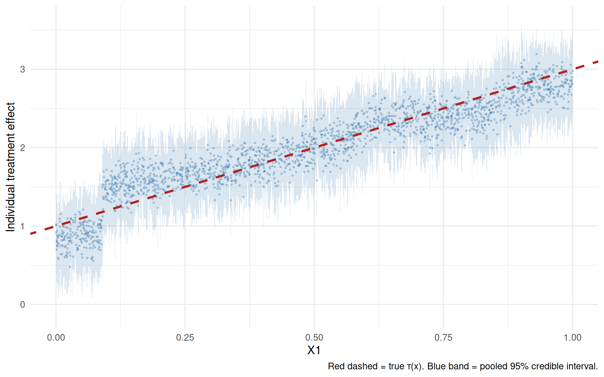
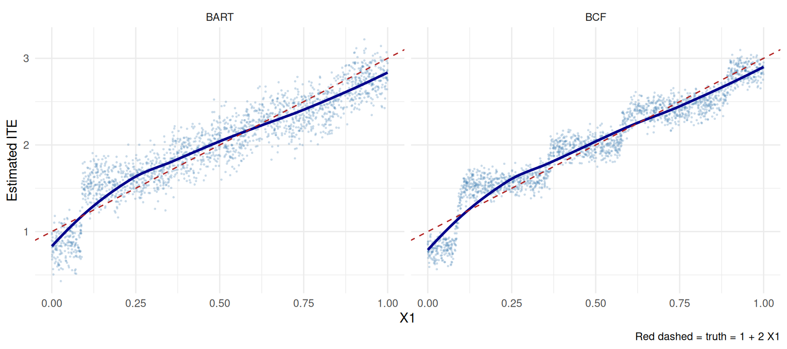

11 Bayesian Causal Inference
The earlier chapters mostly compute point estimates and standard errors. Bayesian methods instead put priors on unknown quantities and return a posterior distribution. For causal inference this is useful when we want uncertainty about a function of the model, such as an individual treatment effect or a policy value, not just one coefficient.
I use two models:
- BART for causal inference (Hill 2011), where BART is used as a flexible outcome model.
- Bayesian Causal Forests (BCF; Hahn, Murray, & Carvalho 2020), which separates the baseline outcome model from the treatment-effect model.
Related reading: The chapter Using Numpyro in Topics on Econometrics and Causal Inference demonstrates a Bayesian hierarchical model with Numpyro. For an MCMC-from-scratch perspective on causal inference, that companion piece is the natural next step after this chapter.
11.1 Setup
We reuse the simulation from the Heterogeneous Treatment Effects chapter, at \(n = 2000\) rather than 5000. Five covariates are drawn independently from \(U(0,1)\). Treatment is \(D \sim \text{Bernoulli}(\Lambda(-0.3 + 1.5X_2))\), the individual effect is \(\tau(x) = 1 + 2x_1\), and the potential outcomes are \(Y(0) = 0.5X_2 + \varepsilon\) with \(\varepsilon \sim N(0,1)\) and \(Y(1) = Y(0) + \tau(X)\). Only \(X_1\) modifies the effect, only \(X_2\) confounds, and \(X_2\) is observed, so both models below are identified.
The aim is to see what a posterior adds over a point estimate: an interval for the ATE that requires no asymptotic argument, and an interval for every individual effect.
Code
set.seed(42)
n <- 2000
p <- 5
X <- matrix(runif(n * p), n, p)
colnames(X) <- paste0("X", 1:p)
# Treatment depends only on observed covariates, so unconfoundedness given X
# holds and the "True ATE" comparison measures estimator performance (not bias).
ps <- plogis(-0.3 + 1.5 * X[, 2])
D <- rbinom(n, 1, ps)
tau <- 1 + 2 * X[, 1]
Y0 <- 0.5 * X[, 2] + rnorm(n)
Y1 <- Y0 + tau
Y <- ifelse(D == 1, Y1, Y0)
df <- data.frame(Y = Y, D = D, X)
cat(sprintf("True ATE = %.3f\n", mean(tau)))True ATE = 1.985The realized ATE in this draw is 1.985, against a population value of 2.
11.2 BART for causal inference (Hill 2011)
BART is a sum of many small regression trees. The prior keeps each tree weak, and the sum of trees gives flexibility.
For causal inference, the recipe is:
- Fit BART for \(\mu(d,x)=\mathbb{E}[Y \mid D=d,X=x]\).
- For each unit \(i\), predict counterfactuals \(\mu(1, x_i)\) and \(\mu(0, x_i)\).
- The individual treatment effect (ITE) is \(\hat\tau_i = \mu(1, x_i) - \mu(0, x_i)\).
- Average the posterior draws to get the posterior for ATE or ITEs.
We run 1000 posterior draws after 200 burn-in, with \(D\) and the five covariates as the design matrix. Each draw gives an ATE, and the spread across draws is the posterior uncertainty.
Code
*****Into main of wbart
*****Data:
data:n,p,np: 2000, 6, 0
y1,yn: 2.058453, -2.423620
x1,x[n*p]: 1.000000, 0.647277
*****Number of Trees: 200
*****Number of Cut Points: 1 ... 100
*****burn and ndpost: 200, 1000
*****Prior:beta,alpha,tau,nu,lambda: 2.000000,0.950000,0.174777,3.000000,0.205658
*****sigma: 1.027514
*****w (weights): 1.000000 ... 1.000000
*****Dirichlet:sparse,theta,omega,a,b,rho,augment: 0,0,1,0.5,1,6,0
*****nkeeptrain,nkeeptest,nkeeptestme,nkeeptreedraws: 1000,1000,1000,1000
*****printevery: 1000
*****skiptr,skipte,skipteme,skiptreedraws: 1,1,1,1
MCMC
done 0 (out of 1200)
done 1000 (out of 1200)
time: 15s
check counts
trcnt,tecnt,temecnt,treedrawscnt: 1000,0,0,1000Code
*****In main of C++ for bart prediction
tc (threadcount): 1
number of bart draws: 1000
number of trees in bart sum: 200
number of x columns: 6
from x,np,p: 6, 2000
***using serial codeCode
mu0_post <- predict(bart_fit, newdata = X_control)*****In main of C++ for bart prediction
tc (threadcount): 1
number of bart draws: 1000
number of trees in bart sum: 200
number of x columns: 6
from x,np,p: 6, 2000
***using serial codeCode
# Posterior of individual treatment effects
tau_post <- mu1_post - mu0_post # 1000 x n posterior draws of ITEs
# Posterior summaries
tau_mean <- rowMeans(tau_post) # ATE in each draw
ate_post_mean <- mean(tau_mean)
ate_post_sd <- sd(tau_mean)
ate_post_ci <- quantile(tau_mean, c(0.025, 0.975))
cat(sprintf("BART ATE posterior:\n"))BART ATE posterior: Mean: 1.977 SD: 0.048 95% CrI: [1.880, 2.071] True ATE: 1.985The posterior mean is 1.977 with a posterior standard deviation of 0.048 and a 95% credible interval of \([1.880, 2.071]\), which covers the realized 1.985. The posterior draws give the uncertainty directly: no asymptotic variance formula and no bootstrap, just the spread of the 1000 draws.
11.2.1 Individual-level credible intervals
BART also gives a posterior for each unit’s treatment effect. Here I plot the posterior mean and pointwise credible intervals against the true \(\tau_i\).
Code
ite_mean <- colMeans(tau_post)
ite_lo <- apply(tau_post, 2, quantile, 0.025)
ite_hi <- apply(tau_post, 2, quantile, 0.975)
df_ite <- tibble(
X1 = X[, 1],
true = tau,
est = ite_mean,
lo = ite_lo,
hi = ite_hi
)
ggplot(df_ite, aes(x = X1)) +
geom_ribbon(aes(ymin = lo, ymax = hi), alpha = 0.2,
fill = "steelblue") +
geom_point(aes(y = est), size = 0.4, alpha = 0.3, colour = "steelblue") +
geom_abline(aes(intercept = 1, slope = 2), colour = "firebrick",
linetype = "dashed", linewidth = 1) +
labs(x = "X1", y = "Individual treatment effect",
caption = "Red dashed = true τ(x). Blue band = pointwise 95% credible interval.") +
theme_minimal()
The blue points are posterior means, the blue ribbon is the pointwise 95% credible interval, and the red dashed line is the true \(\tau(x) = 1+2x_1\). This is what a frequentist CATE estimator does not hand you for free: an interval for each individual, not only for the average.
11.3 Bayesian Causal Forests (BCF)
BART models \(\mathbb{E}[Y \mid D,X]\) directly. That means the same trees have to learn the baseline outcome and the treatment-effect heterogeneity. When strong predictors of \(Y(0)\) are also related to treatment, this can create noisy treatment-effect estimates.
BCF writes the conditional mean as
\[ \mathbb{E}[Y \mid D, X] = \mu(X) + \tau(X)\, D, \tag{11.1}\]
and puts separate priors on \(\mu(X)\) and \(\tau(X)\). The treatment-effect part is regularized more strongly, which helps avoid overfitting heterogeneity.
Code
# BCF requires a propensity score as an input ("piHat")
ps_fit <- glm(D ~ X1 + X2 + X3 + X4 + X5, data = df, family = binomial)
piHat <- predict(ps_fit, type = "response")
# BCF prints MCMC progress in a way that conflicts with knitr's encoding.
# Its `verbose=FALSE`/`no_output=TRUE` arguments do not fully suppress this
# within the SAME R session (the progress output comes from C++ code, not
# from R's own message()/cat() machinery that sink()/suppressMessages()
# can intercept) -- so the only reliable fix is running bcf() in its own R
# process and only reading back the saved result, never its console output.
# Use SEPARATE input and output files so a failed subprocess can never leave
# the input list sitting where we expect the result, and check the exit
# status and object names before trusting it.
#
# The subprocess needs its OWN set.seed(): a seed set in this session does not
# reach a separate R process, so without the seed below BCF's posterior draws
# change every time the chunk actually executes. The knitr cache hides that --
# the numbers look stable until someone clears the cache, and then every BCF
# figure in this chapter moves. Seed the worker so the chapter is reproducible.
tmp_in <- tempfile(fileext = ".rds")
tmp_out <- tempfile(fileext = ".rds")
tmp_err <- tempfile(fileext = ".log")
saveRDS(list(Y = df$Y, D = df$D, X = X, piHat = piHat), tmp_in)
status <- system(paste0("Rscript -e '",
"set.seed(42); ",
"args <- readRDS(\"", tmp_in, "\"); ",
"suppressMessages(library(bcf)); ",
"f <- bcf(y=args$Y, z=args$D, x_control=args$X, x_moderate=args$X, ",
"pihat=args$piHat, nburn=200, nsim=1000, n_chains=1, no_output=TRUE, ",
"verbose=FALSE); ",
"saveRDS(list(tau=f$tau), \"", tmp_out, "\")'"),
ignore.stdout = TRUE, ignore.stderr = FALSE)
# Surface the real cause instead of failing far downstream on a missing field.
if (status != 0L || !file.exists(tmp_out)) {
stop("BCF subprocess failed (exit status ", status, "). ",
"Check that the 'bcf' package is installed in the worker session.")
}
bcf_fit <- readRDS(tmp_out)
if (is.null(bcf_fit$tau)) {
stop("BCF subprocess produced no 'tau' draws; aborting.")
}
unlink(c(tmp_in, tmp_out, tmp_err))The propensity score enters BCF as data, so we fit it first by logistic regression on all five covariates. BCF then runs 1000 draws after 200 burn-in on one chain. We extract the posterior treatment effects and summarise them the same way as for BART:
Code
BCF ATE posterior: Mean: 1.984 SD: 0.044Code
95% CrI: [1.903, 2.072] True ATE: 1.985BCF gives a posterior mean of 1.984 with a posterior standard deviation of 0.044 and a 95% credible interval of \([1.903, 2.072]\). Against BART’s 1.977 and 0.048, and a realized truth of 1.985, the two are indistinguishable at the level of the ATE. That is expected: the separation prior is aimed at the treatment-effect function, and averaging over units washes out most of what it does.
11.3.1 BART vs BCF: individual treatment effects
The difference, if there is one, should appear in the individual effects. Each panel plots the posterior-mean ITE against \(X_1\), with a loess fit and the true \(\tau(x)\) as the dashed red line.
Code
df_compare <- bind_rows(
tibble(X1 = X[, 1], est = bcf_ite_mean, true = tau, method = "BCF"),
tibble(X1 = X[, 1], est = ite_mean, true = tau, method = "BART")
)
ggplot(df_compare, aes(X1, est)) +
geom_point(alpha = 0.2, size = 0.3, colour = "steelblue") +
geom_smooth(method = "loess", se = FALSE, colour = "darkblue",
linewidth = 1) +
geom_abline(intercept = 1, slope = 2, linetype = "dashed",
colour = "firebrick") +
facet_wrap(~ method) +
labs(x = "X1", y = "Estimated ITE",
caption = "Red dashed = truth = 1 + 2 X1") +
theme_minimal()
Both clouds follow the true line. BCF is usually the smoother of the two, because separating the prognostic part \(\mu(X)\) from the effect part \(\tau(X)\) lets the prior regularise the effect function harder without also flattening the baseline. In this DGP the baseline is nearly flat — \(Y(0) = 0.5X_2 + \varepsilon\) — so there is little prognostic signal for BART to confuse with the effect, and the two methods have less to separate them than they would with a strong, treatment-correlated baseline.
Both sets of numbers here are reproducible. BART is seeded in this session, and the BCF worker seeds itself — a seed set in the parent session does not reach a separate R process, so the set.seed(42) inside the Rscript call is what makes the posterior stable across renders.
11.4 When to use Bayesian methods
| Reason to use Bayesian | Reason to use Frequentist |
|---|---|
| Prior information matters | Asymptotic theory is well-understood |
| Need full posterior (e.g. for downstream decisions) | Computational cost matters (BART is slow on large \(n\)) |
| Hierarchical / multilevel data structure | Effects are simple averages |
| Small sample, weak identification | Effects are well-identified |
| Want individual-level credible intervals | Existing frequentist toolkit is sufficient |
Bayesian methods are most useful when the posterior itself will be used: for individual treatment decisions, policy values, or hierarchical models. If the target is just a well-identified ATE in a large sample, the frequentist methods in earlier chapters are often simpler.
11.5 Practical guidance
- Start with BCF if the goal is heterogeneous effects.
- Check MCMC diagnostics. A bad chain makes the posterior summaries useless. Note that the fit above cannot support them: it runs a single chain with a 200-iteration burn-in, short of the package’s own recommendation, so BCF emits a warning and no between-chain diagnostic is available. Treat it as a deterministic rendering demonstration. Its posterior intervals show the shape of the output, not the precision of a production analysis, which would use the recommended burn-in and several chains.
- For BCF, pay attention to
piHat; it is part of the model input. - Report posterior mean, posterior SD, and credible intervals for ATE and meaningful CATE summaries.
11.6 Connections
- The Heterogeneous Treatment Effects chapter covers frequentist meta-learners (S/T/X/R/DR) and causal forests via
grf. BCF can be viewed as the Bayesian counterpart to causal forests: both use ensembles of trees, but BCF puts priors on the trees whilegrfuses honest sample-splitting. - The Sensitivity Analysis chapter’s Cinelli-Hazlett bounds are frequentist; the Bayesian analog is a prior on the unmeasured-confounder strength (cf. McCandless et al. 2007).
- For Bayesian Numpyro-style hierarchical models, see the companion blog chapter.
11.7 Summary
- BART estimates counterfactual outcomes by fitting a flexible outcome model.
- BCF separates baseline outcome prediction from treatment-effect heterogeneity.
- The main output is the posterior, especially for individual effects or policy decisions.
- Computation is the main cost. For very large data, frequentist HTE methods are usually easier.